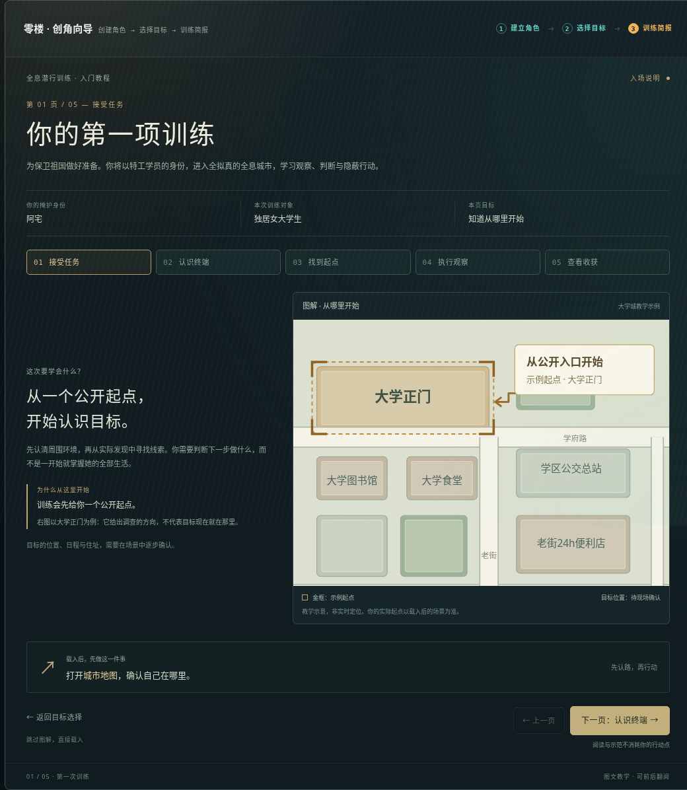
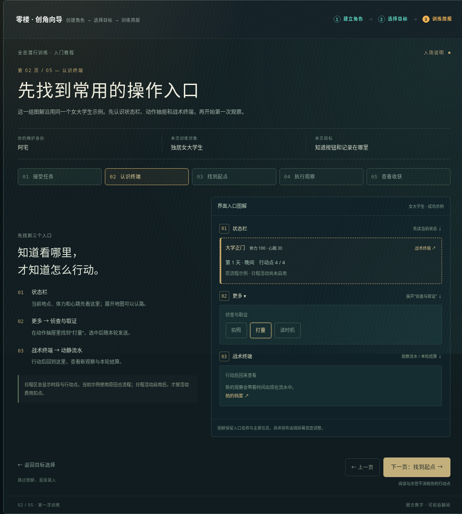
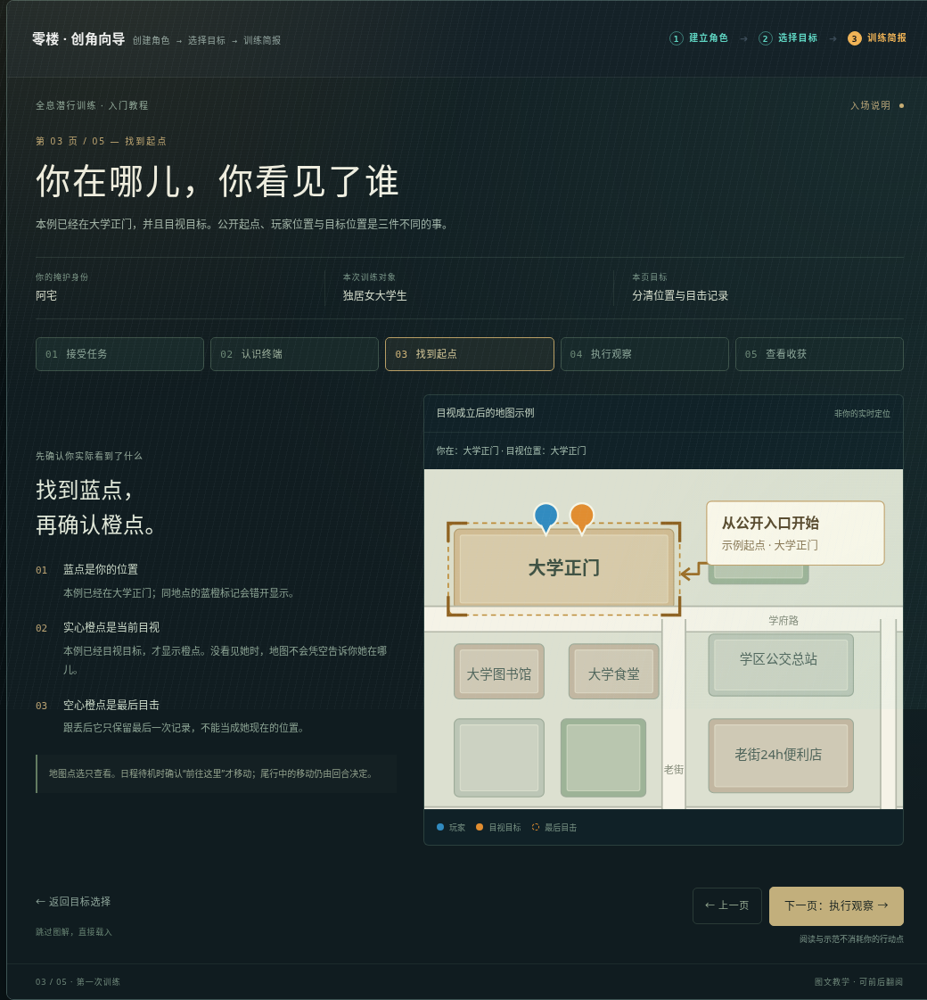
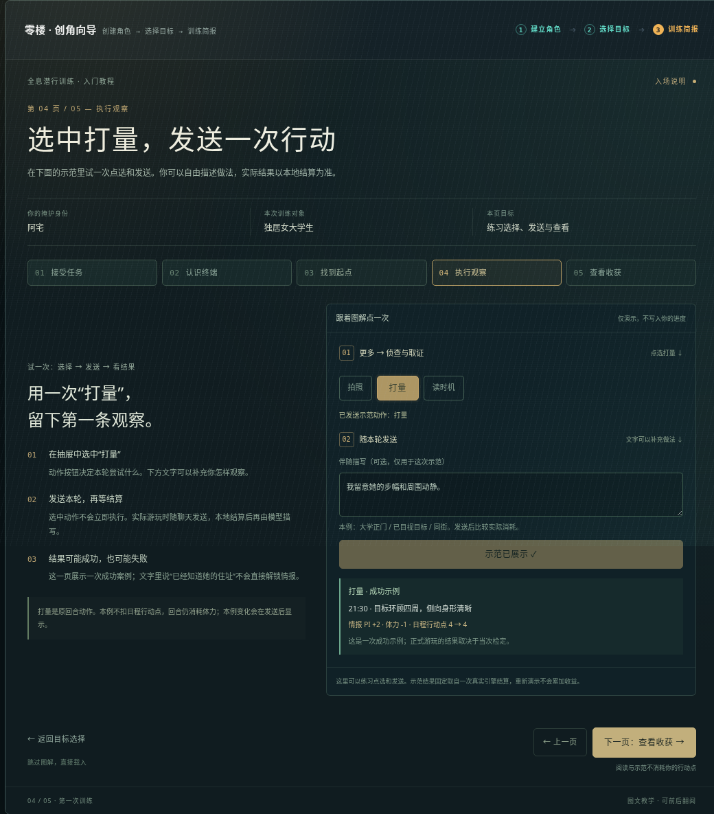
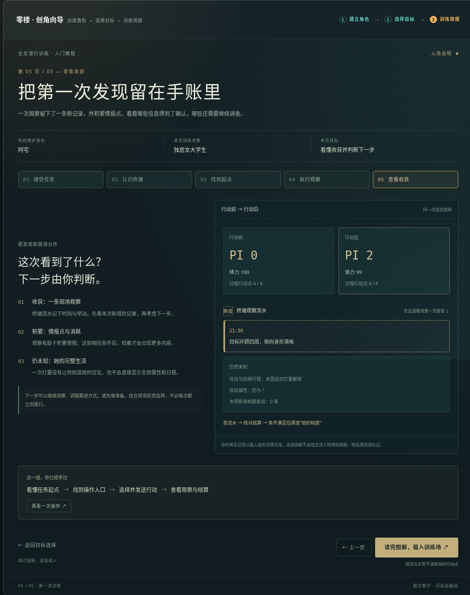

<!doctype html><html lang="zh-CN"><meta charset="utf-8"><meta name="viewport" content="width=device-width,initial-scale=1"><title>第一次训练 · 五页总览</title><style>body{margin:0;background:#0d1a1e;color:#d9e1d1;font:13px/1.8 system-ui,sans-serif}main{padding:30px;max-width:1700px;margin:auto}h1{font-weight:500;font-size:25px;margin:0 0 8px}p{color:#86a18f;margin:0 0 22px}.pages{display:grid;grid-template-columns:repeat(5,minmax(0,1fr));gap:15px}article{min-width:0}h2{font-weight:500;font-size:14px;color:#cdb67e;margin:0 0 12px}img{display:block;width:100%;height:auto;border:1px solid #4b6555;border-radius:4px}a{color:#cdb67e}footer{margin-top:22px;color:#708b79;font-size:11px}@media(max-width:800px){.pages{grid-template-columns:1fr 1fr}}@media(max-width:480px){.pages{grid-template-columns:1fr}}</style><main><h1>第一次训练：认识环境，完成第一次发现</h1><p>五页连续图解 · 可前后翻阅 · 第4页可练习点选与发送</p><div class="pages"><article><h2>01 接受任务</h2><a href="desktop.png"></a></article><article><h2>02 认识终端</h2><a href="page-2-desktop.png"></a></article><article><h2>03 找到起点</h2><a href="page-3-desktop.png"></a></article><article><h2>04 执行观察</h2><a href="page-4-desktop.png"></a></article><article><h2>05 查看收获</h2><a href="page-5-desktop.png"></a></article></div><footer>公开女大学生案例，示范来自正式引擎；阅读和演示不修改实际进度。<a href="index.html">打开交互预览 ↗</a></footer></main></html>